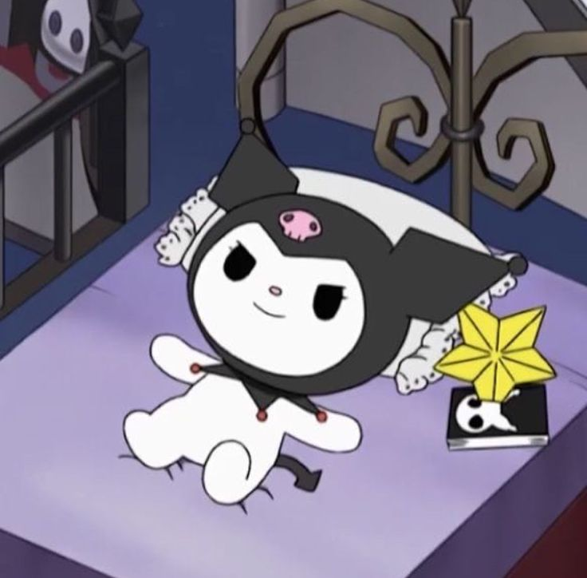

COMO SE CREO KUROMI
ANIME&GAME 22/03/2020

El personaje de Kuromi nació en 2005 en el anime “Onegai My Melody”. Su encantadora capucha negra y la calavera rosa son sus dos grandes características, un personaje “agresivo” a la vez que muy femenino, sin duda Kuromi es adorada por gran parte del público sin importar el género.
seguir leyendo
cual es la historia de KUROMI?
ESTUDOCU 9/06/2021

Kuromi a veces es vista montando a caballo sobre tapir púrpura conocido como Bakú; él tiene el poder de vuelo. Kuromi es el líder de una cuadrilla conocida como " Kuromi 5. " Otros miembros incluyen un gato púrpura llamó Nyanmi, un perro pálido de naranja llamó Wanmi, un zorro blanco llamó Konmi, y una rata gris y blanca llamó Chumi. Kuromi es el colega a otro carácter de conejito Sanrio, que es My Melody . Aunque My Melody quiere ser amiga de Kuromi, los sentimientos de Kuromi son más inclinados a la rivalidad. Yo le llamo ¨La prima oscura de Hello Kitty
seguir leyendo
ver mas noticias